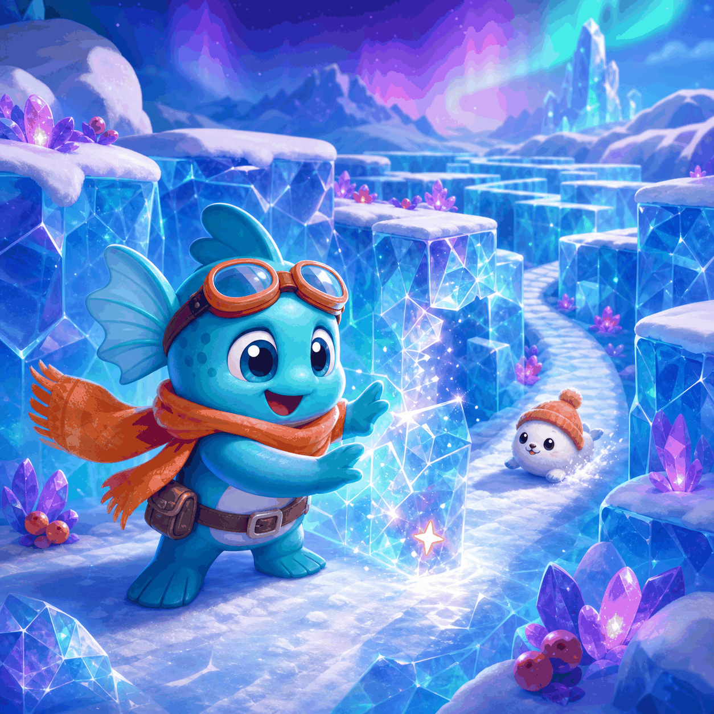

Frostline Rescue

Open the frozen route, collect every berry, and keep one step ahead of the snow drifter.
Best rooms: 0
Ice Chapters
Arrows move. Press SPACE to break the ice ahead.
The blue blocks are breakable. Collect all berries before the drifter reaches you.